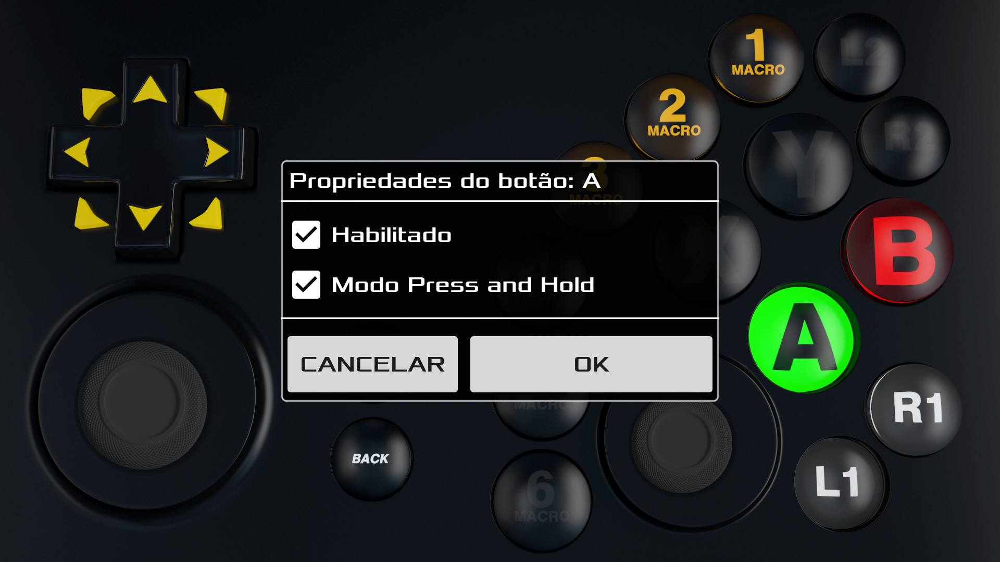
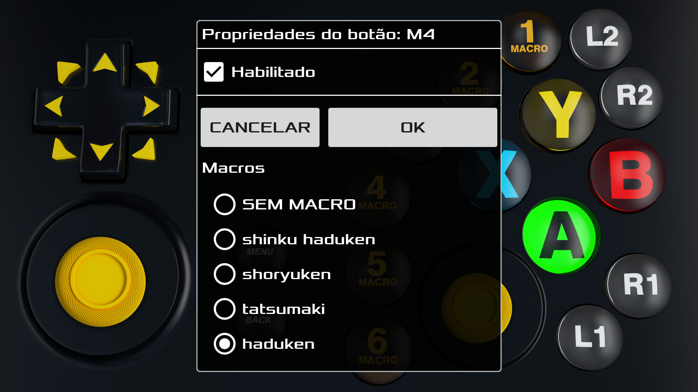
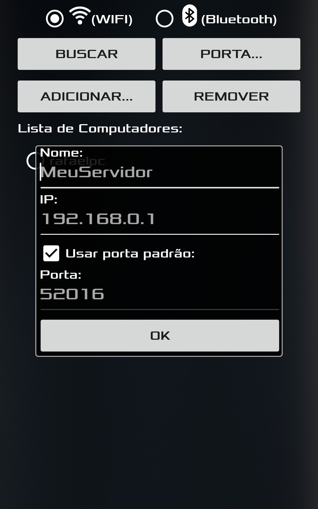

O aplicativo MAXJoypad substitui o seu controle de vídeo game real e possibilita jogar seus jogos de PC usando o poder do seu Smartphone ou Tablet Android.
Demonstração
Características
- Software servidor e driver otimizados para alcançar o melhor desempenho de comunicação entre o aplicativo e o PC resultando em emulação real do controle.
- O driver do MAXJoypad possibilita que o aplicativo seja reconhecido como um controle real no Windows.
- Skin 3D com estética e posicionamento de botões similares ao de um controle real.
- Suporte para comunicação Wifi e Bluetooth.
- Suporte para até 4 jogadores (multiplayer).
- Possibilita a configuração de parâmetros de rede como IP e portas embora o aplicativo realize a busca e a configuração automática desses parâmetros no modo Wifi.
- O recurso de Macro torna o gameplay fácil e descomplicado para jogadores iniciantes e profissionais. Com ele é possível gravar ações de jogo e movimentos especiais e associá-los aos 6 botões de Macro disponíveis.
- Gerenciamento de perfis que possibilita aos jogadores criar diferentes configurações de Gamepad para diferentes jogos e modos de jogo. É possível desabilitar botões não desejados bem como configurar o seu comportamento como habilitar o modo "Press and Hold".
- Suporte para emulação do controle do Xbox 360 em jogos de PC através do x360ce.
- Não requer privilégios administrativos para executar o software servidor no Windows.
- Pacote de instalação e driver com assinatura digital para segurança.
- Rápido processo de instalação do software servidor e do driver.

Interface com botões 3D que imitam um controle real.

Crie perfis de controle como este Jump and Run.

Automatize ações de jogo especiais (Macros).

Configure os botões de MACRO conforme suas necessidades.

Conecte o aplicativo MAXjoypad através da rede Wifi ou Bluetooth.
Download
Baixar: MAXJoypadServerPack-1.2.5.exe
(Para Windows 7, 8, 8.1 e 10 - 32/64 bits)
A instalação do MAXJoypad no Windows é rápida. Basta baixar o pacote acima e executá-lo. Durante a instalação do MAXJoypad no Windows o firewall é configurado automaticamente para possibilitar a conexão entre o Windows e o aplicativo. Caso você não localize a interface do software servidor no Windows verifique o ícone do MAXJoypad no systray. Clique com o botão direito do mouse e selecione a opção "Settings..." para mostrar a interface de configuração do MAXJoypad no Windows.
Se o Windows estiver bloqueando o Download tente o seguinte:Arquivo ZIP: MAXJoypadServerPack-1.2.5.zip. Aplicativo MAXJoypad para Android:

Vídeos/Tutoriais
Instalação do MAXJoypad no Windows.
Contato/Suporte
- Copiar os arquivos x360ce.ini e xinput1_3.dll do diretório
C:\Arquivos de Programas(x86)\MaxJoypad\MaxJoypad\x360\
para o diretório de instalação do jogo e reiniciá-lo.
Para jogos instalados da Steam geralmente o diretório é:
C:\SteamLibrary\steamapps\common\(JOGO)\
ou verifique na configuração do sofware Steam qual o diretório de instalação de jogos para o seu computador. - Veja se o seu Smartphone ou Tablet e o Computador estão online e conectados na mesma rede Wifi.
- Feche o software servidor MAXJoypad no Windows e execute novamente e verifique se o status do servidor aparece como "Running..." no item Gamepad Service Status da interface de configuração localizada no systray do Windows.
- Verifique se a configuração da conexão é a mesma no software servidor e no aplicativo (Connection Setup). Verifique itens como o tipo de conexão Wifi ou Bluetooth e as portas.
- Caso seu Windows 7 esteja com a atualização automática desabilitada ou esteja desatualizado, será necessário instalar ao menos uma atualização para o driver do MAXJoypad ser carregado corretamente. Verifique se seu sistema é 32 ou 64 bits e baixe a atualização direto do site da Microsoft.
- Verifique se o driver MAXJoypad está funcionando corretamente. Para isto, utilize o botão "Check Gamepad Driver..." da interface de configuração do MAXJoypad no Windows. Caso seja apresentada uma mensagem de erro sobre o driver, desinstale o pacote MAXJoypad utilizando a opção Desinstalar Programas do Windows e instale-o novamente.
- Caso seu Windows 8.1 ou 10 esteja com o Windows Defender ativo e ao efetuar o download do Pacote MAXJoypad o navegador informar que o arquivo pode danificar seu computador. Ignore esta mensagem e acesse o arquivo no diretório de Downloads. O MAXJoypad possui pacote de instalação e driver assinados digitalmente para maior segurança.
- Caso seu Windows 8.1 ou 10 esteja com o Windows Defender ativo, atualize as definições de Vírus e Spyware dele. Para isto, entre no Windows Defender e na aba Atualizações pressione o botão Atualizar e reinstale o pacote MAXJoypad novamente.
- O MAXJoypad foi testado com os Antivírus gratuitos mais utilizados e funciona. Este pode não ser o caso se o seu computador tenha uma configuração de firewall ou de Antivírus específica. Neste caso entre em contato com o seu provedor de Antivírus e nos avise.
1 - Configuaração do MAXJoypad para o modo controle do Xbox 360
2 - Problemas de conexão entre o aplicativo e o servidor MAXJoypad
3 - Mensagem de erro sobre o Gamepad Driver
4 - Problemas relacionados com Antivírus e com o Windows Defender